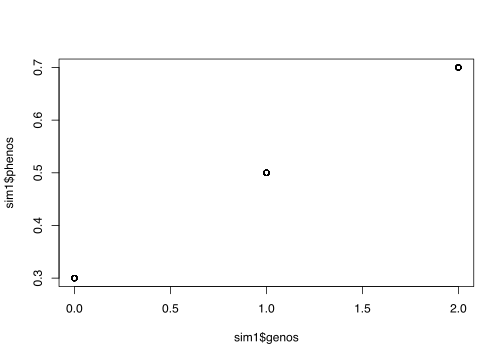
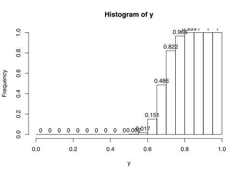

Basic Statistics Lab
RaukR 2019 • Advanced R for Bioinformatics
Bengt Sennblad

1 Tasks
1.1 Task | Simulation
Here, we will generate a synthetic data set by simulating data from a linear model.
\(Y = \beta_0 + \beta_1* X\) is a generating model – it describes how to generate \(Y\) from observed \(X\) and parameters \(\beta_0,\beta_1\).
- Generate 100 samples of \(x,y\) by
- generate 100 genotypes \(x\) from a uniform distribution on integers \(0,1,2\) (tip: use
runif) - set \(\beta_0=0.3\) and \(\beta_0=0.3\)
- generate \(y\) using the model \(y = \beta_1* x + \beta_0\)
- plot \(y\) against \(x\).
- generate 100 genotypes \(x\) from a uniform distribution on integers \(0,1,2\) (tip: use
1.1.0.1 Think about
- Does the plotted results look biologically reasonable?
- if not: what could be the reason?
- When can a simulated data be useful?
Some possible answers
** Does the plot look biologically rasonable?**
- If you followed the somewhat incomplete formula \(Y = \beta_1* X + \beta_0\) in the instructions literally, you might end up with something like this
#parameters
b0 = 0.3
b1 = 0.2
N=100
sim1 = data.frame(genos=round(runif(N,min=0,max=2)))
sim1$phenos = b0 + b1 * sim1$genos
plot(x=sim1$genos, y=sim1$phenos)
- This means that you have effectively demonstrated what a deterministic model is and that is a good thing pedagoically :D
Deterministic vs statistical models
- \(Y = \beta_1* X + \beta_0\) is a deterministic model
- does not model any variation
- Common, e.g., in classical physics ( \(E=mc^3\) )
- \(Y = \beta_1* X + \beta_0 +\epsilon,\) where \(\epsilon ~\sim N(0,\sigma)\) is a statistical (equiv. stochastic, random) model
- attempts to model variation around a population mean (the residuals) determined by the model
- used in statistic analysis
- Code for generating data from \(Y = \beta_1* X + \beta_0 +\epsilon,\) where \(\epsilon ~\sim N(0,\sigma)\) follows below
#parameters
b0 = 0.3
b1 = 0.2
N=100
sim1 = data.frame(genos=round(runif(N,min=0,max=2)))
sim1$phenos = b0 + b1 * sim1$genos + rnorm(N, mean=0, sd=0.05)
plot(x=sim1$genos, y=sim1$phenos)Uses for simulated data
- Oracle knowledge when evaluating performance of methods, e.g., Type I and II errors
- Estimating probabilities and probability distributions of, e.g., data and summary statistics of data (next task)
1.2 Task | Probability of observed data
For the linear model \[Y=\beta_0+\beta_1 X,\] with parameters \((\beta_0=0.3, \beta_1=0.2, \sigma=0.05\)), estimate \[Pr[Y <= 0.6|X=2].\]
1.2.1 Simulation
- simulate 1000 \(y\) using the model above with \(x=2\) and store in a vector \(Y\).
- Make a histogram of \(Y\) and estimate the probability that \(Y<=0.6\) (tip: make sure that \(0.7\) is among to a histogram breakpoints)
Think About
- What shape does the plotted value have?
- Where approximately is the mean?
- Does this make sense in light of the genberative model we used?
- What have we plotted?
Some possible answers
#parameters
b0 = 0.3
b1 = 0.2
N = 1000
x = 2
y = b0 + b1 * x + rnorm(N, mean=0, sd=0.05)
h=hist(y, frequency=TRUE, right=FALSE, breaks=seq(0,1.0, 0.05), plot=FALSE)
h$counts = h$counts/N
plot(h, ylim =c(0,1), labels=TRUE)
# compute requested probability from hist
paste("Pr[Y<=0.6|X=2] = ", sum(h$counts[1:12]))- The plot should be more or less bell-shaped (how well this show might depend on how many breaks you had for the histogram)
- The mean appers to be approx 0.7
- A bell-shaped distribution is typical for the Normal distribution, which makes sense since the residuals are sampled from a normal distribution. However, then we used a
mean = 0, not 0.7 - The reason is that \[N(mean = \mu, sd =\sigma) \Leftrightarrow N(mean = 0, sd = \sigma) + \mu,\] so that our model can equivalently be written \(Y = N(\beta_0+\beta_1*X, \sigma)\)
- In fact, \[N(mean = \mu, sd =\sigma) \Leftrightarrow N(mean = 0, sd = 1)* \sigma + \mu, \] something that is commonly used
- The distribution N(mean=0, sd=)$ is called the general normal distribution
- A variable \(Y\sim N(mean= \mu, sd=\sigma)\) can therefore be transformed into \(Z=\frac{Y-\mu}{\sigma},\) which has a general normal distribution, i. \(Z~N(mean=0, sd=0)\)
- We have plotted an estimate of the distribution of the probability density function (PDF) of \(N(\beta_0+\beta_1*X, \sigma)\).
- Another important distribution in statistics is the distribution of the cumulative distribution function (CDF), which is exactly the probability we estimated above, namely \(Pr[Y <= y| \mu, \sigma]\) for a normal distribution \(N(mean = \mu, sd=\sigma)\). The code below plots the estimated CDF from our simulation; notice the typical sigmoid shape.
# replace the histogram counts with the cumulative counts
h$counts = cumsum(h$counts)
#plot the CDF
plot(h, labels=TRUE)
# compute requested probability from hist
paste("Pr[Y<=0.6|X=2] = ", sum(h$counts[12]))## [1] "Pr[Y<=0.6|X=2] = 0.029"
1.2.2 Analytical solution
- Instead of computing residuals, we make use of the fact that \(N(\mu, \sigma) \Leftrightarrow N(0, \sigma) + \mu\) (see above )
- Calculate \(Pr[Y<=0.6|X=2]\)using R’s cumulative distribution function (CDF) for the Normal distribution (tip: look up help for
Normal)- The CDF of the vale \(y\) is the probability that the stochastic variable \(Y<=y\). (Memo: introduce stochastic variable better)
- Challenge: try both approaches with other values of \(y\) or try to compute \(Pr[Y>y|X=2]\).
Think about
- Do the result fit that from the Simulation?
- If not, can make the fit better?
- What can this result be used for?
Some possible answers
b0 = 0.3
b1 = 0.2
x = 2
y = 0.6
mu = b0 + b1 * x
paste("Pr[Y<=.6|X=2] = ",pnorm(y, mean = mu, sd=0.05))- The result should fit quite well with that from the Simulation approach, given that precision obtained from the histogram
- The precision can be improved with a higher sample size for the simulation
- \(Pr[Y<=y|X=2]\), i.e., the CDF, is actually the bases for p-values. A p-value for an observation \(y\) under a model is defined as the probability of generating \(y\) or more extreme values from the model.
- p-values can refer to different meanings of extreme. Using out model as an example:
- For a left-tailed p-value, \(p(y) = Pr[Y<=y|X=x]\), i.e., the \(CDF(y, \mu, \sigma)\)
- For a right-tailed p-value, \(p(y) = Pr[Y>=y|X=x]\), i.e., \(1-CDF(y, \mu, \sigma)\)
- For a double-tailed p-value, \(p(y) = 2 \min{Pr[Y<=y|X=x],Pr[Y>=y|X=x]}\)
- If the p-value is significant, i.e., below some threshold \(\alpha\) (typically \(\alpha = 0.05\)) we can reject the NULL hypothesis that the data is generated from our model.
- What was the left-tailed p-value for \(Y=0.6\) under our model and was that significant? What can we say about our model as a NULL model.
- p-values can refer to different meanings of extreme. Using out model as an example:
Extra reading
Why do we look at the CDF \(Pr[Y<=y|X=2]\) instead of the PDF \(Pr[Y=y|X=2]\)?
- For a continuous variable, probabilities cannot be computed for exact values, but are actually always computed for intervals
- Formally, the probability of an exact value is 0
- The PDF of \(y\) does therefore not return a probability, but a density, which measures the limit value that is obtained in a infinitismal interval around \(y\)
- Mathematically, it follows that the PDF is defined as the derivative of the PDF.
- Notice that a density can be higher than 1.0
1.3 Task | Statistical tests
We will now consider an extension of the previous task to several data points. As you can imagine, doing this with the above approach could be cumbersome. Instead specific tests have been developed. We will here use the \(t\)-test.
1.3.1 Student’s t-test
Uses normalized residuals as a test statistics:
\[\begin{eqnarray*} t &= \sum_{i}\frac{y_i-\mu}{s/\sqrt{N}} &= \frac{\bar{y}-\mu}{s/\sqrt{N}} \end{eqnarray*}\] where \(s\) is the estimated standard deviation from the observed data. As you can see this boils down to comparing the (standardized) estimated mean from the data, \(\bar{x}\) and the model mean, \(\mu\).
- Challenge: show the equality above`
These normalized residuals are approximately general normal distributed, i.e., \(t~\sim N(0,1)\) (see ‘Possible answers’ under 1.2.1)
Conveniently, The t-test is implemented in the R function t.test
- Simulate a new data set from a linear model \(Y' = \gmma_0 + \gamma_1 X'\), for \(X'=2\) for all samples.
- For simplicity, we will limit ourselves to the case \(X'=2\) (else t-test does not work – handle this better)
- Use our previous model \(Y=\beta_0+\beta_1 X\) as the NULL model.
- Perform a one sample t-test (with \(\mu\) from the NULL model) on new \(Y'\) data.
- Try some different values of \((\gamma_0, \gamma_1)\) closer or further away from \((\beta_0, \beta_1)\)
Think about
- Does the t-test reject the NULL model or not?
Some possible answers
#, eval=FALSE}
# compute the mean, mu, from our model
b0 = 0.3
b1 = 0.2
x = 2
mu = b0 + b1 * x
# Let's simulate the data from another model
c0 = 0.4
c1 = 0.2
N=100
yp = c0 + c1 * rep(x,N) + rnorm(N, mean=0, sd=0.05)
# t-test
t.test(yp, mu=mu)##
## One Sample t-test
##
## data: yp
## t = 17.608, df = 99, p-value < 2.2e-16
## alternative hypothesis: true mean is not equal to 0.7
## 95 percent confidence interval:
## 0.7804921 0.8009366
## sample estimates:
## mean of x
## 0.7907143- The t-test appears quite sensitive, especially for changes of \(\gamma_1\) (
c_1)
The t-test can also be applied to other questions
- Test if estimated parameters in a linear model are significantly different from 0 (see code)
# use previously simulated data in sim1
summary(lm(phenos~genos, data=sim1))- Test if two samples are generated by the same (unknown) model using the standardized difference in means using the NULL hypothesis that this difference is 0 (see next task)
2 Session info
## R version 3.5.3 (2019-03-11)
## Platform: x86_64-apple-darwin15.6.0 (64-bit)
## Running under: macOS High Sierra 10.13.6
##
## Matrix products: default
## BLAS: /System/Library/Frameworks/Accelerate.framework/Versions/A/Frameworks/vecLib.framework/Versions/A/libBLAS.dylib
## LAPACK: /Library/Frameworks/R.framework/Versions/3.5/Resources/lib/libRlapack.dylib
##
## locale:
## [1] en_US.UTF-8/en_US.UTF-8/en_US.UTF-8/C/en_US.UTF-8/en_US.UTF-8
##
## attached base packages:
## [1] stats graphics grDevices utils datasets methods base
##
## other attached packages:
## [1] glmnet_2.0-18 foreach_1.4.4 Matrix_1.2-17 dplyr_0.8.1
## [5] kableExtra_1.1.0 lmtest_0.9-37 zoo_1.8-6 captioner_2.2.3
## [9] bookdown_0.11 knitr_1.23
##
## loaded via a namespace (and not attached):
## [1] tidyselect_0.2.5 xfun_0.7 purrr_0.3.2
## [4] lattice_0.20-38 colorspace_1.4-1 htmltools_0.3.6
## [7] viridisLite_0.3.0 yaml_2.2.0 rlang_0.3.4
## [10] pillar_1.4.1 later_0.8.0 glue_1.3.1
## [13] stringr_1.4.0 munsell_0.5.0 rvest_0.3.4
## [16] codetools_0.2-16 evaluate_0.14 httpuv_1.5.1
## [19] highr_0.8 Rcpp_1.0.1 readr_1.3.1
## [22] scales_1.0.0 promises_1.0.1 webshot_0.5.1
## [25] jsonlite_1.6 mime_0.6 servr_0.13
## [28] hms_0.4.2 packrat_0.5.0 digest_0.6.19
## [31] stringi_1.4.3 xaringan_0.10 grid_3.5.3
## [34] tools_3.5.3 magrittr_1.5 tibble_2.1.1
## [37] crayon_1.3.4 pkgconfig_2.0.2 xml2_1.2.0
## [40] assertthat_0.2.1 rmarkdown_1.13 httr_1.4.0
## [43] rstudioapi_0.10 iterators_1.0.10 R6_2.4.0
## [46] compiler_3.5.3Built on: 04-Jun-2019 at 17:46:00.
2019 • SciLifeLab • NBIS • RaukR